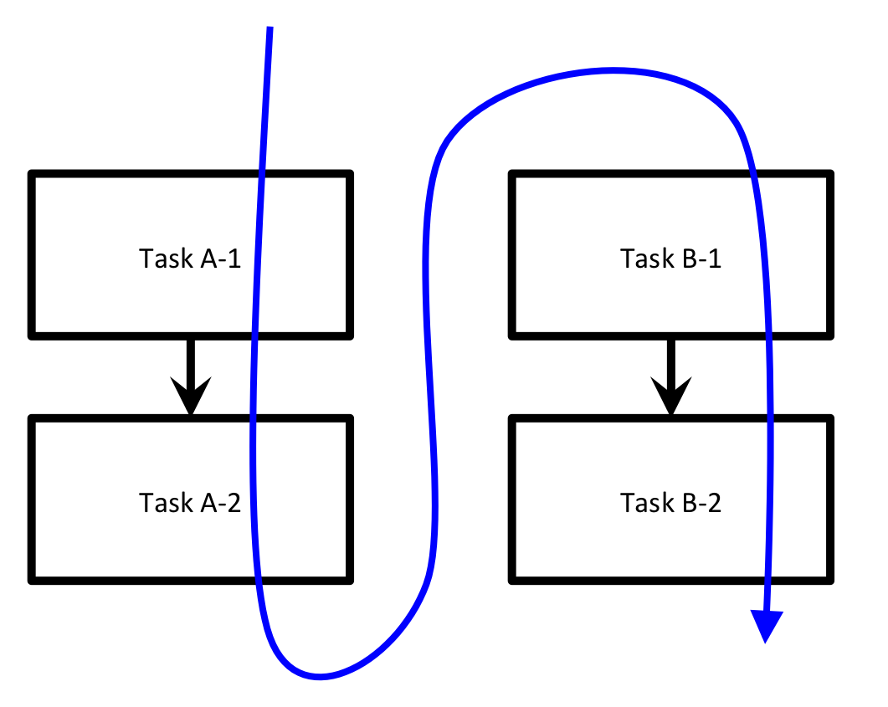
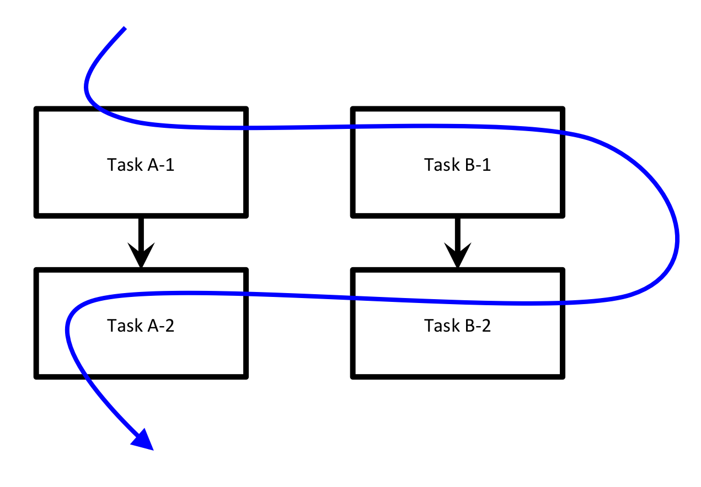

Assigning job priority¶
You might want to control the order in which your FireWorks are run. Setting job priority is simple. A few notes:
- You can assign any numerical value to the priority, including negative numbers and decimals. Higher priorities are run first.
- FireWorks with any value of priority will be run before jobs without a priority defined. If two FireWorks have the same priority, one of those jobs will be chosen randomly (you can also choose FIFO and FILO ordering for equal-priority FireWorks via the FW config).
- You can launch specific fireworks from the command line via rlaunch singleshot -f FW_ID or qlaunch -r singleshot -f FW_ID.
Set job priority using the command line after adding FWs¶
If you would like to set the priority of a Firework after you have already entered it into the LaunchPad, you can do so via the command:
lpad set_priority <PRIORITY> -i <FW_IDS>
where <FW_IDS> is the numerical id of the Firework you want to set the priority of (or a list of comma-separated ids), and <PRIORITY> is the priority to assign.
Instead of specifying ids, you can also specify a name (-n), a state (-s), or a custom query (-q). The full command is thus:
lpad set_priority <PRIORITY> [-i FW_IDS] [-n NAME] [-s STATE] [-q QUERY]
Refer to the documentation (lpad set_priority -h) for more information.
Set job priority when creating FireWorks¶
To set job priority, simply set a key named _priority in your Firework spec to your desired priority. FireWorks will automatically prioritize jobs based on their value of this key.
Example 1: Prioritize one workflow over another¶
Imagine we have two workflows, A and B, with two steps each (1 and 2). We want to run workflow A in its entirety before beginning workflow B. Our execution should follow the blue arrow:
{kind=link}
Let’s examine how we can set up such an execution model.
Move to the
A_then_Bsubdirectory of theprioritytutorial directory in your installation directory:cd <INSTALL_DIR>/fw_tutorials/priority/A_then_B
Look inside the files
wfA.yamlandwfB.yaml. You’ll notice that the_prioritykey for both steps ofwfA.yamlis set to 2, whereas the corresponding values for the steps ofwfB.yamlare only 1. This means that workflow A will execute in its entirety before starting workflow B.Add and run the FireWorks to confirm:
lpad reset lpad add *.yaml rlaunch -s rapidfire
You should have noticed text printed to the Terminal in the following order:
Task A-1 Task A-2 Task B-1 Task B-2
Example 2: A breadth-first workflow¶
Let’s now try another execution order: A-1, B-1, B-2, A-2.
{kind=link}
Move to the
breadthfirstsubdirectory of theprioritytutorial directory in your installation directory:cd <INSTALL_DIR>/fw_tutorials/priority/breadthfirst
Look inside the files
wfA.yamlandwfB.yaml. You’ll notice that this time, the_prioritykey is highest for step A-1 and lowest for step A-2, corresponding to our desired execution order.Add and run the FireWorks to confirm:
lpad reset lpad add *.yaml rlaunch -s rapidfire
You should have noticed text printed to the Terminal in the following order:
Task A-1 Task B-1 Task B-2 Task A-2